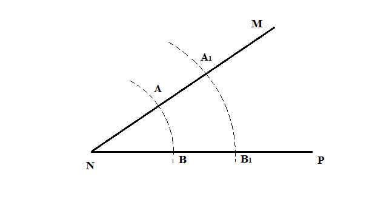
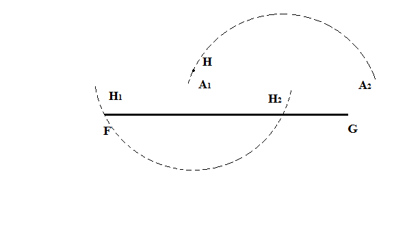
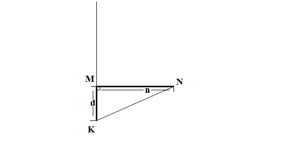
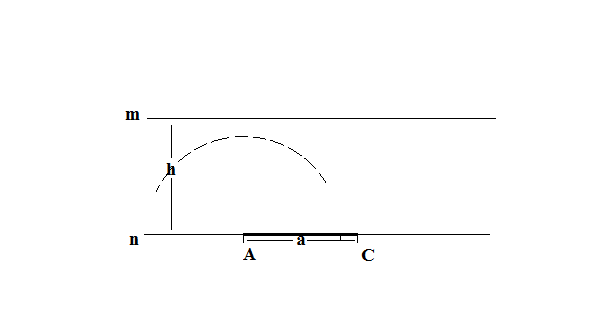

- Основные задачи на построение
-
Построение треугольника по трем сторонам m, n, p
Previous Next
Проводим произвольную прямую FG и отмечаем на ней точку А.

Из точки А, как из центра, радиусом равным отрезку m, засекаем точку В на луче AG.
Из точки А, как из центра, радиусом равным отрезку n, описываем дугу А1А2.
Из точки B, как из центра, радиусом равным отрезку p, описываем дугу B1B2.
Дуги А1А2 и В1В2 пересекутся в некоторой точке С (если n + p > m). Точку С соединяем отрезками с точками А и В.
Треугольник АВС - искомый.
-
Построение угла, равному данному a
Previous Next
Проводим произвольную прямую FG и отмечаем на ней точку O.
Из вершины данного угла а, как из центра, произвольным радиусом засекаем на сторонах этого угла точки K и N.
Тем же радиусом из точки О, как из центра, начиная от луча ОG, описываем дугу О1О2.
Из точки О1, как из центра, радиусом, равным расстоянию между К и N, засекаем на дуге О1О2 точку С.
Из точки О, через точку С проводим прямую.
Угол СОG - искомый.
-
Построение биссектрисы данного угла MNP
- Способ 1
-
Способ 2
Previous Next
Из вершины N данного угла MNP, как из центра, произвольным радиусом засекаем на сторонах угла точки А и В.
Из той же вершины N, как из центра, но с другим радиусом, засекаем точки А1 и B1 на сторонах угла MNP.
Проводим прямолинейные отрезки AB1 и A1B, которые пересекутся в точке Н.
Из точки N через точку Н проводим луч.
NН - биссектриса угла MNP.
-
Построение перпендикуляра к прямой FG из заданной точки А, лежащей на этой прямой
Previous Next
Выбираем произвольную точку О, рядом с заданной точкой А, но не лежащей на прямой FG.

Из точки О, как из центра, раствором циркуля с радиусом, равным расстоянию между А и О, проводим дугу, пересекающую прямую FG в двух точках А и А1.
Из точки А1 через точку О проводим диаметр окружности. Противоположную точку диаметра обозначим Н.
Cоединим прямой точки А и Н.
АН - искомый перпендикуляр.
-
Построение перпендикуляра к отрезку FG из заданной точки Н, не лежащей на этом отрезке
Previous Next
Из точки Н, как из центра, произвольным радиусом проводим дугу, пересекающую прямую FG в двух точках А и В.
Из точки А , как из центрa, произвольным радиусом проводим дугу А1А2.
Из точек В, как из центров,тем же радиусом проводим дугу В1В2.
Место пересечения двух дуг А1А2 и В1В2, точку С, соединим прямой с Н.
СН - искомый перпендикуляр.
- Построение серединного перпендикуляра к отрезку FG (деление отрезка пополам)
-
Построение прямой, параллельной данной прямой FG через заданную точку H, не лежащей на этой прямой
Previous Next
Из точки Н, как из центра, произвольным радиусом проводим дугу, пересекающую прямую FG в двух точках Н1 и Н2 .
Из точки Н2, как из центра, тем же радиусом проводим дугу А1А2.
Из точки Н, как из центра, радиусом равным расстоянием между точками Н1 и Н2, засекаем на дуге А1А2 точку К.
Проводим прямую между точками Н и К.
КН параллельна FG.
-
Построение треугольника по трем сторонам m, n, p
- Построение отрезков, определяемых алгебраическими формулами
-
x = $\sqrt{ab}$$x=ab/c$Previous Next
Запишем условие в виде пропорции c : a = b : x. Пусть MA = a, MN = c, так что члены одного из отношений отложены на одном луче, исходящим из M.
На другом луче, исходящем из той же точки М, откладываем МК = b.
Через точку А проводим прямую, параллельную КN, и отмечаем точку её пересечения с прямой MK, точку Х.
MX = x.
x = $\sqrt{a^2 + b^2}$x = $\sqrt[4]{a^2 - b^2}$Previous NextПреобразуем исходное выражение
x = $\sqrt{\sqrt{a^2 - b^2} \sqrt{a^2 + b^2}$
Построим отрезки
y = $\sqrt{a^2 - b^2}$, z = $\sqrt{a^2 + b^2}$
y - гипотенуза прямоугольгого треугольника, у которого катеты равны a и b.
z - катет прямоугольгого треугольника, у гипотенуза равна а, а другой катет равен b.
x = $\sqrt{yz}$Cмотреть решение задачи №1
x = $\sqrt[4]{abcd}$- Построение треугольников
- Построить треугольник по основанию n, углу a, прилегающему к основанию и сумме s двух боковых сторон.
-
Построить треугольник по основанию n и перпендикуляру MK, опущенному из конца основания на боковую сторону.
Previous Next
Откладываем прямую NM = n и проводим перпендикуляр MK из точки М (дано).
Провидим луч из точки N через точку K, он должен быть перпендикулярен к MK.
Строим перпендикуляр к основанию NM через его середину и отмечаем точку пересечения перпендикуляра с лучом N (точка Р).
Cоединяем отрезком Р и М.
Треугольник MPN - искомый.
-
Построить прямоугольный треугольник по катету n и разности гипотенузы и другого катета d.
Previous Next
Из точки М отклыдваем отрезок MN = n. Из этой же точки, перпендикулярно к отрезку MN, отклыдваем отрезок MK = d.
Cоединяем отрезком точки K и N. А также построим луч из К через точку М.

Строим перпендикуляр к отрезку KN через его середину и отмечаем точку пересечения перпендикуляра с лучом (точка Р).
Cоединяем отрезком точки Р и N.
Треугольник MPN - искомый.
-
Построить треугольник ABC по строне а, высоте ha и радиусу описанной окружности R.
Previous Next
Построим коружность радиусом R. Отметим на окружности произвольную точку A.
Из точки А, как из центра, строим дугу радиуса а. В - точка пересечения дуги с окружностью.
К отрезку АВ строим перпендикуляр длинной ha, так, чтобы его противоположный конец лежал на окружности, обозначим его С.
Соединим прямыми С и А, С и В.
Треугольник АВС - искомый.
-
Построить треугольник ABC трем медианам ma, mb, mc
Previous Next
Построим треугольник BDN, BD = mc, ND = ma, BN = mb.
На прямой NB отложим отрезок NO = 1/3 NB. И через тoчку О проведем прямую, параллельную BD. T - точка пересечения прямой с ND.
От О строим отрезок ОН = ОТ, продолжая отрезок ОТ. Точно также от Т строим отрезок ТС = ОТ.
Строим лучи из В через точку Н и из С через точку N. A - точка их пересечения.
Cоединим прямыми точка А, В и С.
Треугольник АВС - искомый.
-
Построить треугольник ABC по стороне с и медианам ma и mb.
- Построить треугольник ABC по двум сторонам a, b и высоте ha.
Previous NextНа прямой n откладываем отрезок AC = a. Проведем прямую m || n на расстоянии высоты ha от прямой n. Далее в зависимости от длины высоты и второй стороны рассмотрим три случая решения задачи.
Из точки А, как из центра, строим дугу радиуса b. Дуга пересекает прямую m в двух точках В1 и В2.
Треугольники АВ1С и АВ2С- искомые.
Из точки А, как из центра, строим дугу радиуса b. Дуга пересекает прямую m в точке В.
Треугольник АВС - искомый.
Из точки А, как из центра, строим дугу радиуса b. Дуга не пересекает прямую m.
Решения нет.
- Построить треугольник ABC по двум сторонам a, b и медиане mc.
- Построить треугольник ABC по двум сторонам a, b и биссектрисе угла между ними lc.
- Построить треугольник ABC по двум высотам hb, hc и медиане ma.
Построим прямоугольные треугольники APM и AQM так, чтобы AM = ma и точки P и Q лежали по разные стороны от отрезка АМ.
Стороны MP и MQ равнялись 1/2 hc и 1/2 hb соответственно.
На продолжении отрезка АМ за точку М отложим отрезок А1М = АМ.
Через точку А1 проведем прямую, параллельную АР. Она пересечет луч AQ в точке С.
Previous NextИз точки С через точку М откладываем прямую, которая пересечет луч АР в точке В.
Треугольник АВС - искомый.
- Построить треугольник АВС по стороне а, противолежащему углу А и сумме двух других сторон b + c.
Строим отрезок BD = b + c.
От луча DB откладываем угол равный 1/2 угла А.
Из точки В, как из центра, проводим дугу радиуса а. Она пересечет построенный ранее луч в точке С.
Previous NextСтроим серединный перпендикуляр к отрезку СD, который пересечет отрезкок ВD в точке А.
Треугольник АВС - искомый.
- Построить треугольник ABC по двум сторонам a, b и высоте ha.